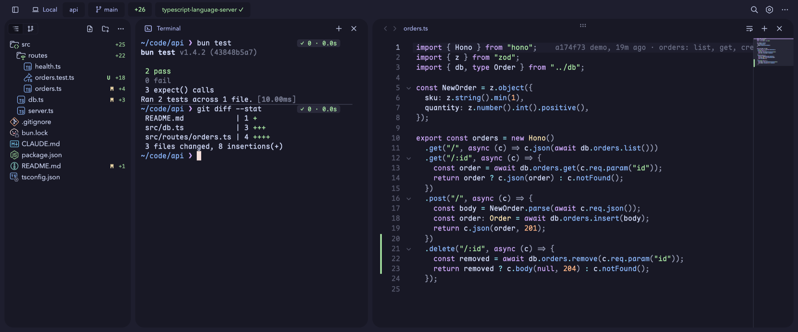
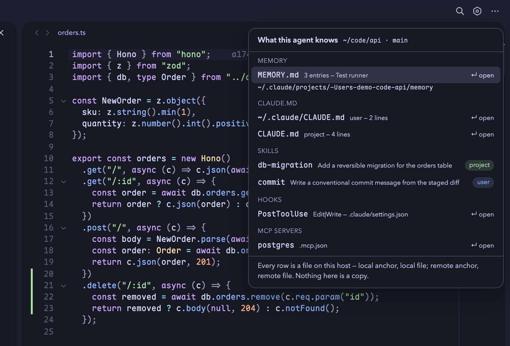
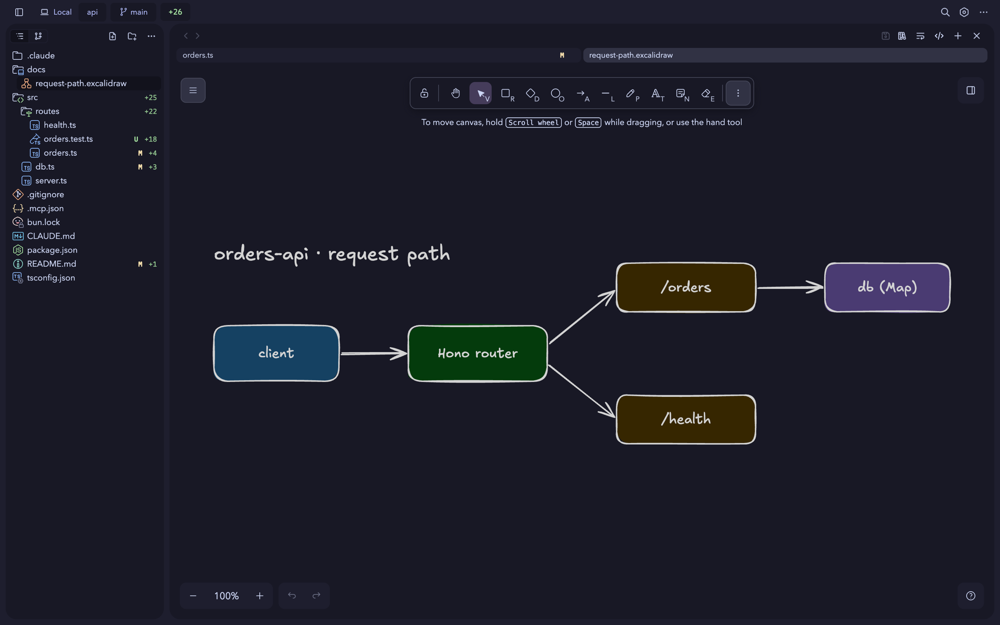
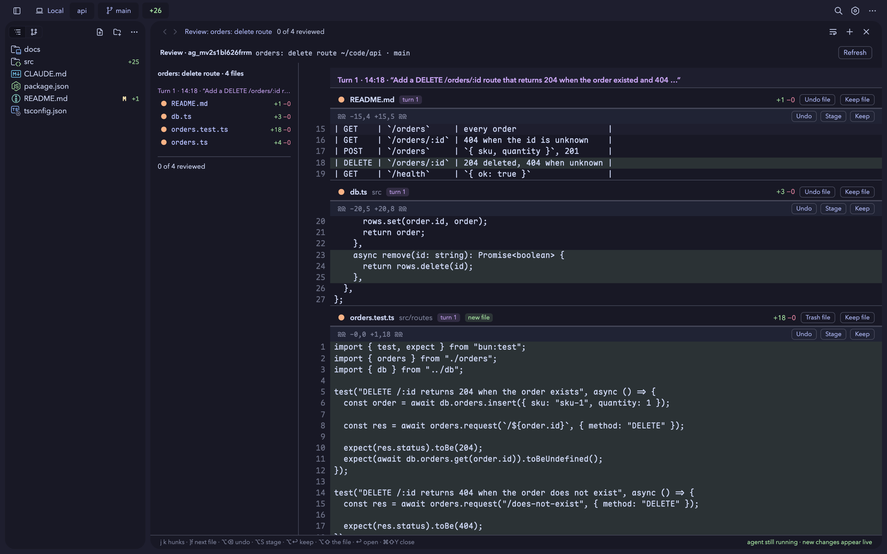
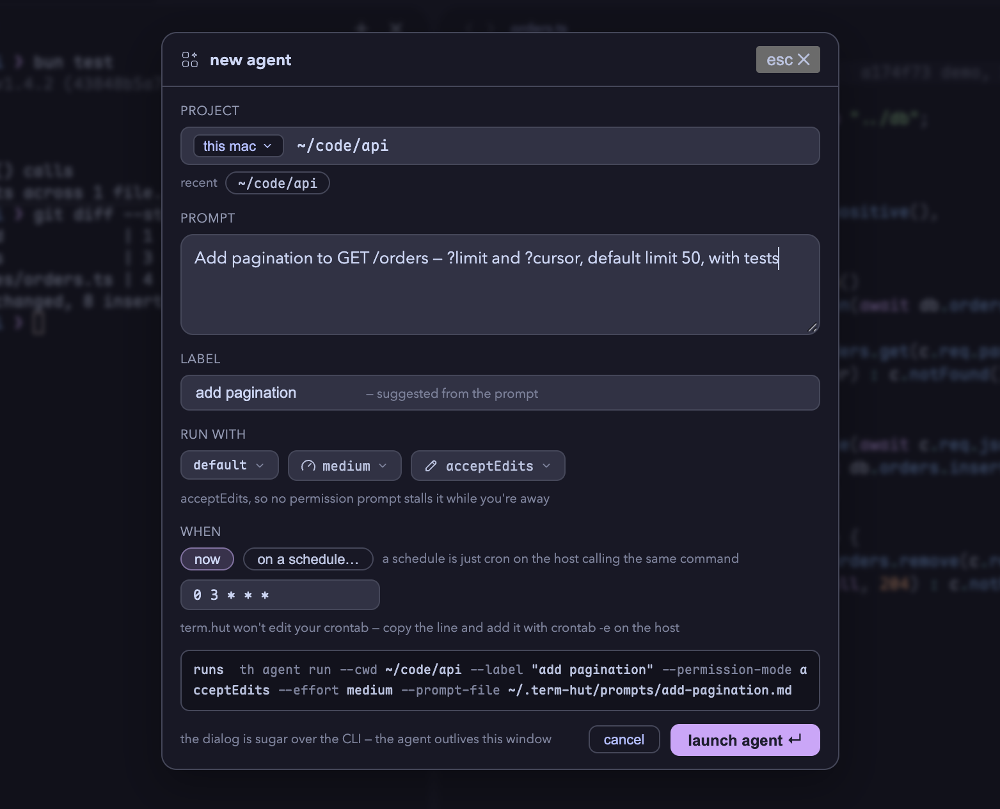

Terminal, files, code editor and agents share state in one
window — against a local directory or ssh. Sessions run behind a
FIFO on the host that owns them, so closing the app detaches instead of killing them.
# Friday, at the desk>_ anchored ~/src/api · main · claude session running# … close the laptop. The session is not a child process — it keeps running.# Monday, from another machine, over SSH>_ anchored ~/src/api · main · tmux re-attached — the claude TUI is where you left it
>_
01
Why it exists
stated as mechanisms, not benefits
01
Confusion
I kept getting confused when running multiple agents and repos: what was running where? I tried other apps, but they all had limitations that didn't work for me. I found I was using VSCodium the most, but it felt bloated. It inspired this app.
02
Curiosity
Could I design an app that met my criteria while also learning about Rust and Tauri? Could I keep it small, but useful? Could I use this for my business, personal, and technical ambition? I'm still trying to answer that question, but this is my start.
03
Claude
VSCodium paired Claude Code awesome harnesses. I wanted something smaller with only the stuff I found awesome or interesting. I try and keep it up to date with the latest from Claude Code to leverage any cool new stuff or avoid breaking anything.
Reuse, not remake
Build small by letting better tools do their thing. The agent is Claude Code's own TUI in a terminal tab, so term.hut works with a Claude subscription (important to me) and never touches its login.
What I won't do
Take your data.
Build for architectures I don't use.
Try to take over the world
02
In the window
one project, bound to everything that works on it
about these images
Every desktop image below is a screenshot of term.hut 26.10
running against a small demo project, served to a browser with
th web. The project, its paths and the agent are
examples; the agent's diff is a real run. The iPhone images are the app's phone
layout rendered on demo data.
anchored workspace · ⌘1 terminal · ⌘2 editor
Terminal, tree and editor point at the same place
Open a folder and it becomes the anchor: the file tree,
the shells, the editor and its language servers all follow it, and so does the git
branch in the titlebar. Shells live in tmux on whichever host owns the project, so a
restart re-attaches them — a running claude TUI
included — instead of starting over. With shell integration on, every command becomes
a block with its exit code and duration, one keystroke from being copied, folded,
rerun or handed to the agent. Language servers install themselves per project; the
gutter shows what changed since the last commit and who wrote the line you're on.

~/code/api · main — tests and a diff stat as command blocks, the changed lines in the guttercontext · what this agent knows
The files the session actually reads
Right-click the project and ask what its agent knows:
the memory, the CLAUDE.md chain, and the skills, hooks and MCP servers a session
started there will load. Every row is a file on the host that owns the project —
local project, local file; ssh project, remote file — and ↵ opens it in the editor.
term.hut surfaces the CLI's own files and keeps no memory of its own.

memory, two CLAUDE.md files, two skills, a hook and an MCP server — each row opens the file it namesdrawings · .excalidraw
A diagram the agent writes opens as a diagram
An .excalidraw file opens
in the editor pane as the drawing, in a full Excalidraw editor that follows the app's
theme and saves like any other file — with the JSON one toggle away. Claude writes
that JSON well, so a diagram it draws lands in a tab instead of an opaque blob, and a
change it makes while the drawing is open appears in front of you. BPMN files get the
same treatment; images, notebooks, SVG, HTML and Markdown get previews.

docs/request-path.excalidraw — the editor pane, not a separate app
03
Agents
read from ~/.term-hut/agents — the app is a viewer, not the owner
interactive work happens in the TUI
The agent runs in Claude Code's own TUI, in an
ordinary terminal tab in the project's directory or worktree. term.hut used to
render the stream itself; the CLI is better at that, and term.hut already has an
excellent pane for running programs. Auth is the CLI's own, so term.hut contains no
Anthropic auth code and your subscription works because it's just
claude.
What the app won't do to an agent
Answer its permission prompts.
Stop it, or delete it — dead agents' directories are pruned after 14 days.
Ping you about it — no banners, no dock badges.
⌘⇧Y · agent review
What the agent changed, turn by turn
Review gathers everything the project's agent changed
into one read-only buffer, grouped by the turn that made each hunk and labelled with
the prompt that asked for it. Undo, stage or keep a hunk or a whole file without
leaving the keyboard; it re-reads while the agent is still working, and it works the
same on an SSH host. Changes it can't tie to the agent are shown, never undone.

one turn, four files — undo, stage or keep each hunk; “agent still running · new changes appear live”⌘⇧N · new agent
The dialog prints the command it is sugar over
Where — this Mac or a server, and a recent project.
What — a prompt, with a label suggested from it. How to run — model, effort and
permission mode. And when: now, or on a schedule, which writes the prompt file and
hands you the cron line to add on that host — term.hut never edits your crontab. The
exact th agent run line sits above the launch button,
because the agent outlives the window that started it.

the printed command is what runs — the dialog adds nothing the CLI can't dounattended · th agent run
An agent that starts with no app running
The same command from a shell or a crontab spawns a
detached agent with term.hut nowhere in the picture; cron on the host is the whole
scheduler. It writes an ordinary agent directory, so the next morning — on that
machine or another one over SSH — ⌘⇧Y reviews what it changed like any other
agent's. Give it acceptEdits: nobody is attached to
answer a prompt overnight.
crontab · then a run by hand
# 05:30 every day, on the host that has the repo
30 5 * * * th agent run --cwd ~/work/api --prompt-file ~/.term-hut/prompts/nightly-triage.md \
--permission-mode acceptEdits --label "nightly triage"
$ th agent run --cwd ~/code/api --label "orders: delete route" --prompt "Add DELETE /orders/:id …"
ag_mv2s1bl626frrm · spawned · pid 55785 · ~/.term-hut/agents/ag_mv2s1bl626frrm/
✓ detached — it keeps running after this shell exits
04
Remote is not a lesser mode
a project over SSH behaves like a local one
01
A resident server
Connect a server once and term.hut runs a small
hut-server there, checked against a SHA-256 built into
the app. It serves files, git, search, file watching and language servers, and it
outlives the connection: a laptop that sleeps or changes networks reconnects to the
same server with nothing in flight lost.
02
Shells that survive
Remote terminals use their own SSH channel and tmux on
the host, so they keep their jobs across a restart and still work when the server is
down — use one to fix the host. A port that starts listening there is forwarded to
localhost over the same session, with an offer to open or preview it.
03
Failures with buttons
It retries on its own first, then shows one message
per project with what to do next: retry, reinstall the server, upload it instead of
downloading, open a terminal on the host, copy diagnostics.
th remote doctor <host> checks each stage from
the command line. Linux x86_64 and aarch64 hosts, and Apple silicon Macs.
05
Try it if you'd like
macOS
Apple silicon · macOS 26+ · signed and notarized
zsh
$open term.hut_<version>_aarch64.dmg
Updates itself in place. th
on your PATH opens files and folders from any shell.
$curl -fsSL https://github.com/HutsonLabs/termhut.hutsonlabs.com/releases/latest/download/termhut-install.sh | sh
Installs the release's package with apt, dnf, zypper or
pacman. Debian 12+, Ubuntu 22.04+, Fedora, openSUSE Tumbleweed; Arch and Omarchy get
term-hut-bin (x86_64). The deb and rpm update themselves.
$docker run -d --init -p 6767:6767 ghcr.io/hutsonlabs/term.hut:latest
The same UI served over HTTP and a WebSocket.
docker logs prints the token URL to open. Or run
th web on any install, and
th web install-login to keep it running.
Installs the Linux Flatpak into a WSL 2 distro and opens
it through WSLg, or in your Windows browser. termhut-wsl.cmd
does the same where the execution policy refuses a downloaded script.
SSH straight to your own servers — Linux, or a Mac
with Remote Login — with no account and no relay. It attaches to the same tmux sessions
as term.hut on the desktop, shows which projects have an agent working, and has
files and an editor. The app makes its own key and installs it with your password once.
Needs the free TestFlight app and an SSH server you can log in to.
Every release ships one version everywhere: the dmg, the
deb, rpm and Flatpak for both architectures, the Arch package, and the container image,
which is built in the same CI run from that exact deb. The remote server binaries are
on the same release, at the same version as the app that installs them.